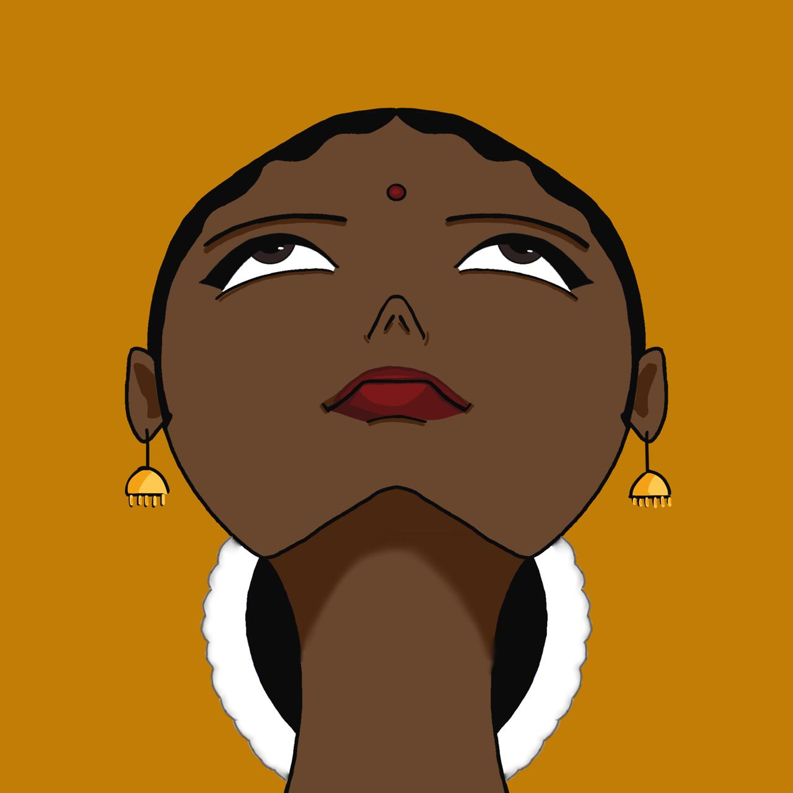
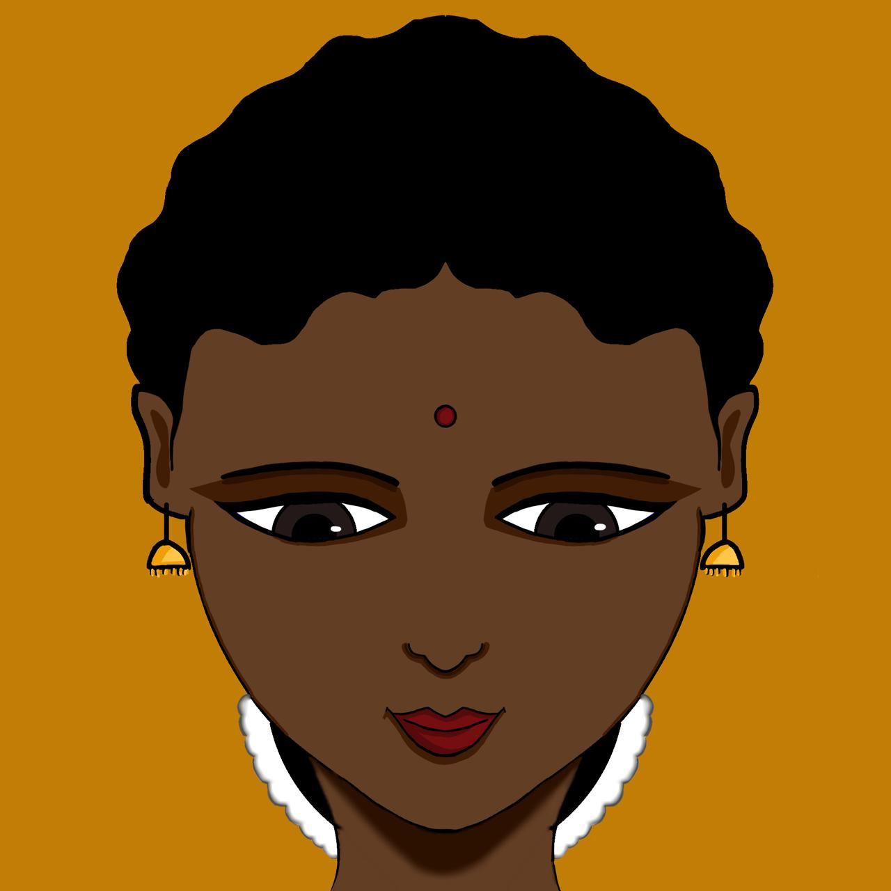
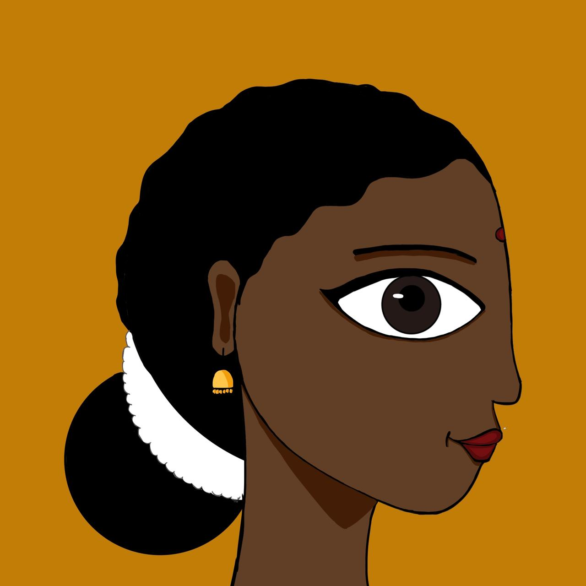
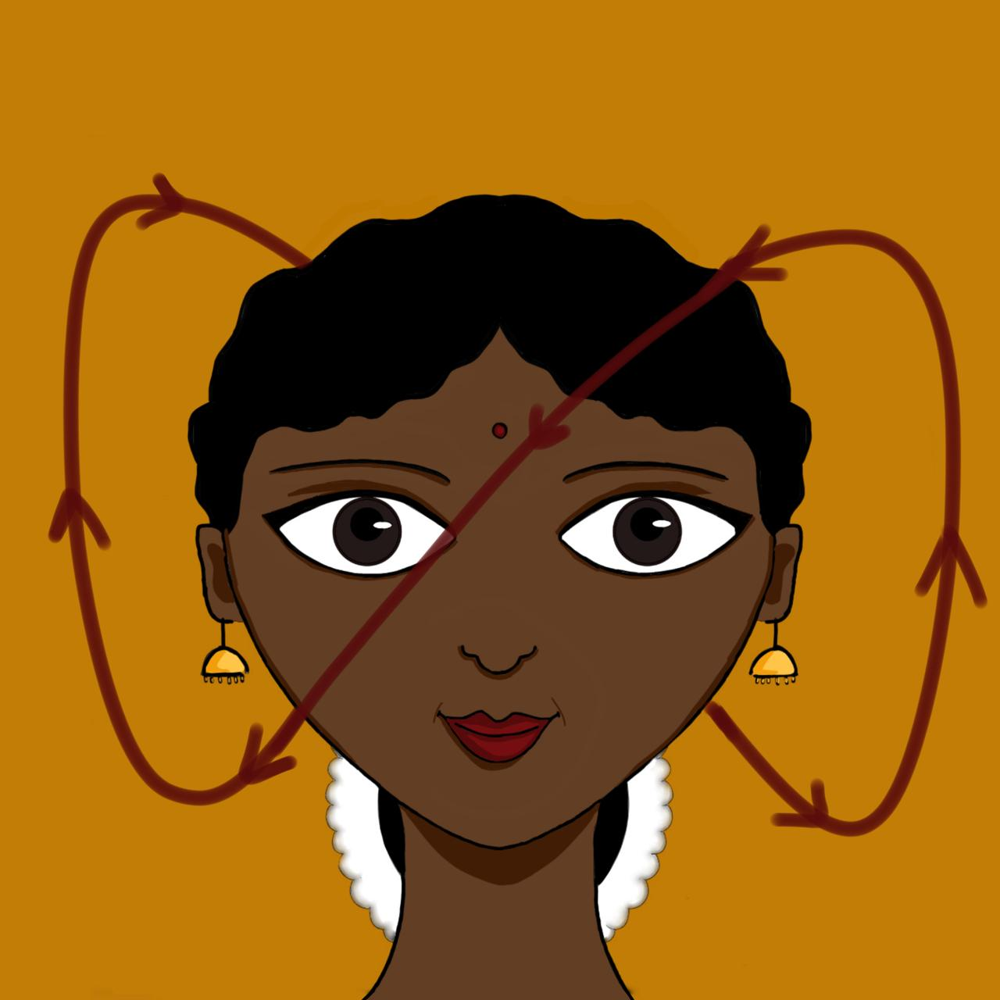

Samam
Keeping head straight.
Used at the beginning of a dance, to show calmness, or during prayer, or to portray normal behaviour.
Shiro bheda refers to the head movements that express a particular bhava. According to Abhinaya Darpana written by Nandikeshwara, there are 9 types of head movements:
Samam Udvahitam Adhomukham Alolitam Dhutam
Kampitancha Paravrittam Utkshiptam Parivahitam
Navadhaa kathitham sheersham
Naatyashastra visharadaihi

Keeping head straight.
Used at the beginning of a dance, to show calmness, or during prayer, or to portray normal behaviour.

Lifting the head up.
Used to depict looking up at the sky, mountains, a flag etc.

Casting the head down.
Used to portray shyness, insult, sorrow etc.
Rotating the head clockwise and anti-clockwise.
Used to portray intoxication, possesion, ego etc.
Turning the head from side to side.
Used to denial, or looking side to side.
Nodding the head up and down.
Used to say "yes", or to call someone.

Turning the head away.
Used to show dislike or ignorance.

Lifting the head from one side.
Used to show pride or ego.

Shaking the head swiftly from side to side (in the shape of an infinity symbol).
Used to portray infatuation.
Illustrations and animations by Varnika Bhaskar.